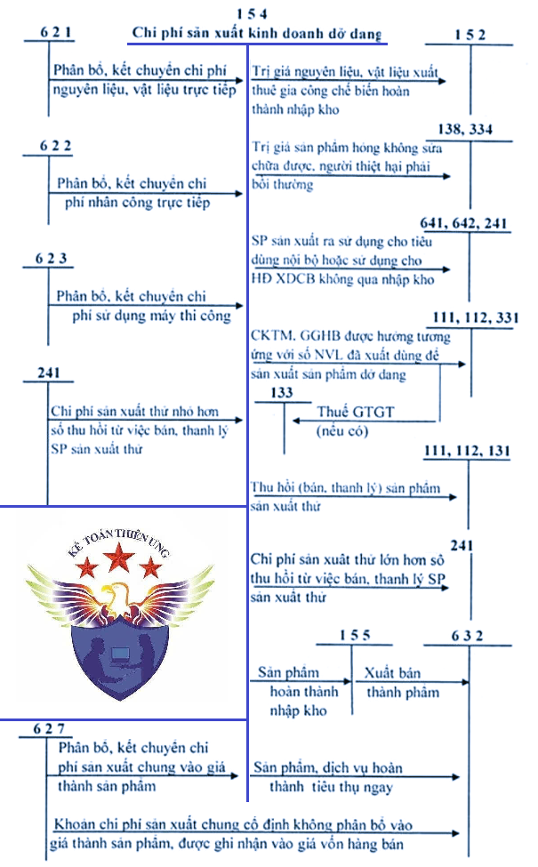
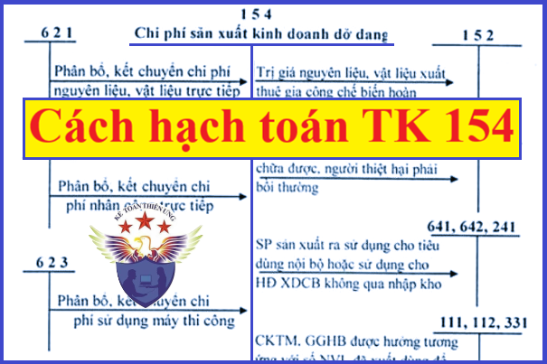

Hướng dẫn cách hạch toán Chi phí sản xuất kinh doanh dở dang - Tài khoản 154 áp dụng chế độ kế toán theo Thông tư 99/2025/TT-BTC mới nhất 2026, hạch toán chi phí thuê ngoài, khấu hao TSCĐ, nguyên vật liệu, công cụ dụng cụ, nhân công, tiền lương, Chi phí điện, nước, điện thoại...
1. Tài khoản 154 - Chi phí sản xuất, kinh doanh dở dang
Nguyên tắc kế toán
a) Tài khoản này dùng để phản ánh tổng hợp chi phí sản xuất, kinh doanh phục vụ cho việc tính giá thành sản phẩm, dịch vụ ở doanh nghiệp.
b) Tài khoản 154 - Chi phí sản xuất, kinh doanh dở dang phản ánh chi phí sản xuất, kinh doanh dở dang đầu kỳ, phát sinh trong kỳ và dở dang cuối kỳ; chi phí sản xuất, kinh doanh của khối lượng sản phẩm, dịch vụ hoàn thành trong kỳ của các hoạt động sản xuất, kinh doanh chính, phụ và thuê ngoài gia công chế biến ở các doanh nghiệp sản xuất hoặc doanh nghiệp kinh doanh dịch vụ.
c) Tùy theo đặc điểm hoạt động sản xuất kinh doanh, yêu cầu quản lý của doanh nghiệp, chi phí sản xuất, kinh doanh hạch toán trên Tài khoản 154 có thể được chi tiết theo địa điểm phát sinh chi phí (phân xưởng, bộ phận sản xuất, đội sản xuất, công trường,...); theo loại, nhóm sản phẩm hoặc chi tiết, bộ phận sản phẩm; theo từng loại dịch vụ hoặc theo từng công đoạn dịch vụ,...
d) Chi phí sản xuất, kinh doanh phản ánh trên Tài khoản 154 gồm những chi phí sau:
đ) Cuối kỳ, phân bổ và kết chuyển chi phí sản xuất chung cố định vào chi phí chế biến cho mỗi đơn vị sản phẩm theo mức công suất bình thường. Trường hợp mức sản phẩm thực tế sản xuất ra thấp hơn mức công suất bình thường thì doanh nghiệp phải tính và xác định chi phí sản xuất chung cố định phân bổ vào chi phí chế biến cho mỗi đơn vị sản phẩm theo mức công suất bình thường. Khoản chi phí sản xuất chung cố định không phân bổ (không tính vào giá thành sản phẩm) được ghi nhận vào giá vốn hàng bán trong kỳ. Chi phí sản xuất chung biến đổi được phân bổ hết vào chi phí chế biến cho mỗi đơn vị sản phẩm theo chi phí thực tế phát sinh.
e) Không hạch toán vào Tài khoản 154 những chi phí sau:
- Chi phí bán hàng;
- Chi phí quản lý doanh nghiệp;
- Chi phí khác;
- Chi phí thuế thu nhập doanh nghiệp;
- Chi đầu tư xây dựng cơ bản;
- Các khoản chi được trang trải bằng nguồn khác.
|
Phương pháp kế toán Tài khoản 154 trong ngành công nghiệp
a) Tài khoản 154 - Chi phí sản xuất, kinh doanh dở dang áp dụng trong ngành công nghiệp dùng để tập hợp chi phí sản xuất và tính giá thành sản phẩm theo các phân xưởng hoặc bộ phận sản xuất, chế tạo sản phẩm. Đối với các doanh nghiệp sản xuất có thuê ngoài gia công, chế biến, cung cấp lao vụ, dịch vụ cho bên ngoài hoặc phục vụ cho việc sản xuất sản phẩm thì chi phí của những hoạt động này cũng được tập hợp vào Tài khoản 154.
b) Tùy theo yêu cầu quản lý của doanh nghiệp, Tài khoản 154 ở các doanh nghiệp sản xuất công nghiệp có thể được hạch toán chi tiết theo địa điểm phát sinh chi phí (phân xưởng, bộ phận sản xuất) hoặc theo loại, nhóm sản phẩm, sản phẩm, hoặc chi tiết bộ phận sản phẩm,...
Phương pháp kế toán Tài khoản 154 trong ngành dịch vụ
a) Tài khoản 154 - Chi phí sản xuất, kinh doanh dở dang áp dụng trong các doanh nghiệp kinh doanh dịch vụ (giao thông vận tải, bưu điện, du lịch, dịch vụ,...) để tập hợp chi phí sản xuất và tính giá thành của dịch vụ đã thực hiện. Tùy theo yêu cầu quản lý của doanh nghiệp, tài khoản này có thể được hạch toán chi tiết theo ngành kinh doanh dịch vụ như vận tải, du lịch,...hoặc theo địa điểm phát sinh chi phí hoặc chi tiết theo từng dịch vụ,...
b) Đối với lĩnh vực giao thông vận tải
- Tài khoản này được dùng để tập hợp chi phí và tính giá thành dịch vụ vận tải, có thể chi tiết theo từng ngành như vận tải đường bộ, vận tải đường sắt, đường thủy, đường hàng không, vận tải đường ống,... hoặc từng hoạt động (vận tải hành khách, vận tải hàng hóa,...) hoặc theo từng bộ phận kinh doanh dịch vụ,...
- Trong quá trình cung cấp dịch vụ vận tải, săm lốp thay thế thường được sử dụng cho nhiều kỳ nên không tính toàn bộ giá trị săm lốp vào giá thành dịch vụ vận tải ngay một lần khi xuất dùng mà có thể phân bổ dần cho nhiều kỳ.
c) Đối với hoạt động kinh doanh du lịch
Tài khoản này được dùng để tập hợp chi phí và tính giá thành dịch vụ du lịch, tùy theo yêu cầu quản lý của doanh nghiệp, có thể được mở chi tiết theo từng loại hoạt động như: Hướng dẫn du lịch, kinh doanh vận tải du lịch,...
d) Đối với hoạt động kinh doanh khách sạn
Tài khoản này được dùng để tập hợp chi phí và tính giá thành dịch vụ khách sạn, tùy theo yêu cầu quản lý của doanh nghiệp, có thể mở chi tiết theo từng loại dịch vụ như: Hoạt động ăn, uống, dịch vụ buồng nghỉ, dịch vụ vui chơi giải trí, phục vụ khác (giặt, là, cắt tóc, điện tín, thể thao,...).
Phương pháp kế toán Tài khoản 154 trong ngành xây dựng
a) Tài khoản 154 - Chi phí sản xuất, kinh doanh dở dang áp dụng trong các doanh nghiệp kinh doanh xây lắp để tập hợp chi phí sản xuất và tính giá thành của sản phẩm xây lắp đã thực hiện. Tùy theo yêu cầu quản lý của doanh nghiệp, tài khoản này có thể được hạch toán chi tiết theo từng hoạt động xây lắp như xây lắp công nghiệp, xây lắp dân dụng..., hoặc chi tiết theo từng sản phẩm xây lắp,...
b) Việc tập hợp chi phí sản xuất, tính giá thành sản phẩm xây lắp phải chi tiết theo từng công trình, hạng mục công trình, khoản mục chi phí (nguyên liệu, vật liệu trực tiếp, nhân công trực tiếp, sử dụng máy thi công, chi phí sản xuất chung...), theo quy định của pháp luật về quản lý đầu tư và xây dựng hiện hành.
c) Chủ đầu tư xây dựng bất động sản sử dụng tài khoản này để tập hợp chi phí xây dựng thành phẩm bất động sản. Trường hợp bất động sản xây dựng sử dụng cho nhiều mục đích (làm văn phòng, cho thuê hoặc để bán, ví dụ như tòa nhà chung cư hỗn hợp) thì thực hiện theo nguyên tắc:
- Nếu đủ căn cứ để hạch toán riêng hoặc xác định được tỷ trọng của phần chi phí xây dựng bất động sản để bán (thành phẩm bất động sản) và phần chi phí xây dựng bất động sản để cho thuê hoặc làm văn phòng (TSCĐ hoặc BĐSĐT) thì chỉ hạch toán vào Tài khoản 154 phần chi phí xây dựng thành phẩm bất động sản còn phần chi phí xây dựng TSCĐ hoặc BĐSĐT được hạch toán vào Tài khoản 241 - Xây dựng cơ bản dở dang.
- Trường hợp không hạch toán riêng hoặc xác định được tỷ trọng chi phí xây dựng cho các cấu phần thành phẩm bất động sản, TSCĐ hoặc BĐSĐT thì doanh nghiệp tập hợp toàn bộ chi phí phát sinh liên quan trực tiếp tới việc đầu tư xây dựng tài sản vào Tài khoản 241 - Xây dựng cơ bản dở dang. Khi công trình, dự án hoàn thành bàn giao đưa vào sử dụng, doanh nghiệp căn cứ cách thức sử dụng tài sản trong thực tế để kết chuyển chi phí đầu tư xây dựng phù hợp với bản chất của từng loại tài sản.
|
Sơ đồ chữ T hạch toán Tài khoản 154

2. Kết cấu và nội dung Tài khoản 154
|
Bên Nợ: |
Bên Có: |
|
- Kết chuyển các chi phí nguyên liệu, vật liệu trực tiếp, chi phí nhân công trực tiếp, chi phí sử dụng máy thi công, chi phí sản xuất chung phát sinh trong kỳ liên quan đến sản xuất sản phẩm và thực hiện dịch vụ;
- Giá trị nguyên liệu, vật liệu xuất thuê ngoài gia công chế biến, chi phí vận chuyển vật liệu đến nơi chế biến, tiền thuê ngoài gia công chế biến;
- Các chi phí nguyên liệu, vật liệu trực tiếp, chi phí nhân công trực tiếp, chi phí sử dụng máy thi công, chi phí sản xuất chung phát sinh trong kỳ liên quan đến sản phẩm xây lắp;
|
- Giá thành sản xuất thực tế của sản phẩm đã sản xuất, chế tạo xong nhập kho hoặc chuyển thẳng đi bán, tiêu dùng nội bộ, sử dụng ngay cho hoạt động XDCB,...
- Trị giá nguyên liệu, vật liệu, hàng hóa gia công xong nhập lại kho hoặc sử dụng ngay cho các hoạt động;
- Giá thành thực tế của khối lượng dịch vụ đã hoàn thành cung cấp cho khách hàng;
- Giá thành sản xuất của sản phẩm xây lắp hoàn thành bàn giao từng phần hoặc toàn bộ được tiêu thụ trong kỳ hoặc chờ tiêu thụ; hoặc bàn giao cho doanh nghiệp nhận thầu chính xây lắp...;
- Trị giá phế liệu thu hồi, giá trị sản phẩm hỏng không sửa chữa được.
|
| Số dư bên Nợ: Chi phí sản xuất, kinh doanh còn dở dang tại thời điểm kết thúc kỳ kế toán. |
3. Cách hạch toán chi phí sản xuất kinh doanh dở dang một số nghiệp vụ:
|
3.1. Phương pháp kế toán một số giao dịch kinh tế chủ yếu trong ngành công nghiệp
a) Cuối kỳ, kết chuyển chi phí nguyên liệu, vật liệu trực tiếp theo từng đối tượng tập hợp chi phí, ghi:
Nợ TK 154 - Chi phí sản xuất, kinh doanh dở dang
Nợ TK 632 - Giá vốn hàng bán (phần chi phí NVL trên mức bình thường)
Có TK 621 - Chi phí nguyên liệu, vật liệu trực tiếp
b) Cuối kỳ, kết chuyển chi phí nhân công trực tiếp theo từng đối tượng tập hợp chi phí, ghi:
Nợ TK 154 - Chi phí sản xuất, kinh doanh dở dang
Nợ TK 632 - Giá vốn hàng bán (chi phí nhân công trực tiếp trên mức bình thường)
Có TK 622 - Chi phí nhân công trực tiếp.
c) Trường hợp mức sản phẩm thực tế sản xuất ra cao hơn hoặc bằng công suất bình thường thì cuối kỳ, doanh nghiệp phải tính toán, phân bổ và kết chuyển toàn bộ chi phí sản xuất chung (chi phí sản xuất chung biến đổi và chi phí sản xuất chung cố định) cho từng đối tượng tập hợp chi phí, ghi:
Nợ TK 154 - Chi phí sản xuất, kinh doanh dở dang
Có TK 627 - Chi phí sản xuất chung.
d) Trường hợp mức sản phẩm thực tế sản xuất ra thấp hơn công suất bình thường thì doanh nghiệp phải tính và xác định chi phí sản xuất chung cố định phân bổ vào chi phí chế biến cho mỗi đơn vị sản phẩm theo mức công suất bình thường để tính vào giá thành sản phẩm. Khoản chi phí sản xuất chung cố định không được tính vào giá thành sản phẩm theo quy định được ghi nhận vào giá vốn hàng bán trong kỳ, ghi:
Nợ TK 154 - Chi phí sản xuất, kinh doanh dở dang
Nợ TK 632 - Giá vốn hàng bán (phần chi phí sản xuất chung cố định không phân bổ vào giá thành sản phẩm)
Có TK 627 - Chi phí sản xuất chung.
đ) Trường hợp sau khi đã xuất kho nguyên vật liệu đưa vào sản xuất, nếu doanh nghiệp nhận được khoản chiết khấu thương mại hoặc giảm giá liên quan đến nguyên vật liệu đó, doanh nghiệp ghi giảm chi phí sản xuất kinh doanh dở dang đối với phần chiết khấu thương mại, giảm giá được hưởng tương ứng với số nguyên vật liệu đã xuất dùng để sản xuất sản phẩm dở dang, ghi:
Nợ các TK 111, 112, 331,...
Có TK 154 - Chi phí sản xuất, kinh doanh dở dang (phần chiết khấu thương mại, giảm giá được hưởng tương ứng với số nguyên vật liệu đã xuất dùng để sản xuất sản phẩm dở dang)
Có TK 133 - Thuế GTGT được khấu trừ (1331) (nếu có).
e) Trị giá nguyên liệu, vật liệu xuất thuê ngoài gia công nhập lại kho, ghi:
Nợ TK 152 - Nguyên liệu, vật liệu
Có TK 154 - Chi phí sản xuất, kinh doanh dở dang.
g) Trị giá sản phẩm hỏng không sửa chữa được, người gây ra thiệt hại sản phẩm hỏng phải bồi thường, ghi:
Nợ TK 138 - Phải thu khác (1388)
Nợ TK 334 - Phải trả người lao động
Có TK 154 - Chi phí sản xuất, kinh doanh dở dang.
h) Giá thành sản phẩm thực tế nhập kho trong kỳ, ghi:
Nợ TK 155 - Sản phẩm
Có TK 154 - Chi phí sản xuất, kinh doanh dở dang.
i) Trường hợp sản phẩm sản xuất xong, không tiến hành nhập kho mà chuyển giao thẳng cho người mua hàng (sản phẩm điện, nước...), ghi:
Nợ TK 632 - Giá vốn hàng bán
Có TK 154 - Chi phí sản xuất, kinh doanh dở dang.
k) Trường hợp sản phẩm sản xuất ra được sử dụng tiêu dùng nội bộ ngay hoặc tiếp tục xuất dùng cho hoạt động XDCB không qua nhập kho, ghi:
Nợ các TK 241, 641, 642,...
Có TK 154 - Chi phí sản xuất, kinh doanh dở dang.
3.2. Phương pháp kế toán một số giao dịch kinh tế chủ yếu trong ngành kinh doanh dịch vụ
Phương pháp kế toán một số nghiệp vụ kinh tế chủ yếu trên Tài khoản 154 ở các doanh nghiệp thuộc ngành kinh doanh dịch vụ tương tự như đối với ngành Công nghiệp. Ngoài ra cần chú ý:
a) Nghiệp vụ kết chuyển giá thành thực tế của khối lượng dịch vụ đã hoàn thành, đã chuyển giao cho người mua và được xác định là đã bán trong kỳ, ghi:
Nợ TK 632 - Giá vốn hàng bán
Có TK 154 - Chi phí sản xuất, kinh doanh dở dang.
b) Khi sử dụng dịch vụ tiêu dùng nội bộ, ghi:
Nợ các TK 641, 642
Có TK 154 - Chi phí sản xuất, kinh doanh dở dang
Có TK 3331 - Thuế GTGT phải nộp (nếu có).
3.3. Phương pháp kế toán một số giao dịch kinh tế chủ yếu trong ngành xây dựng
3.3.1. Phương pháp hạch toán tập hợp chi phí xây lắp:
a) Đối với chi phí nguyên liệu, vật liệu trực tiếp:
- Chi phí nguyên liệu, vật liệu trực tiếp bao gồm: Giá trị thực tế của vật liệu chính, vật liệu phụ, các cấu kiện hoặc các bộ phận rời, vật liệu luân chuyển tham gia cấu thành thực thể sản phẩm xây, lắp hoặc giúp cho việc thực hiện và hoàn thành khối lượng xây, lắp (không kể vật liệu phụ cho máy móc, phương tiện thi công và những vật liệu tính trong chi phí chung).
- Về nguyên tắc hạch toán, nguyên liệu, vật liệu sử dụng cho xây dựng công trình/hạng mục công trình nào phải tính trực tiếp cho công trình/hạng mục công trình đó trên cơ sở chứng từ gốc theo số lượng thực tế đã sử dụng và theo giá thực tế xuất kho nguyên liệu, vật liệu.
- Tại thời điểm kết thúc kỳ kế toán hoặc khi công trình/hạng mục công trình hoàn thành, tiến hành kiểm kê số nguyên liệu, vật liệu còn lại tại nơi sản xuất (nếu có) để ghi giảm trừ chi phí nguyên liệu, vật liệu trực tiếp xuất sử dụng cho công trình/hạng mục công trình đó.
- Trường hợp doanh nghiệp không xác định được chi phí nguyên liệu, vật liệu trực tiếp cho từng công trình, hạng mục công trình thì có thể áp dụng phương pháp phân bổ nguyên liệu, vật liệu cho đối tượng sử dụng theo tiêu thức phù hợp. Doanh nghiệp phải thuyết minh chi tiết về tiêu thức phân bổ nguyên liệu, vật liệu trên Báo cáo tài chính. Căn cứ vào Bảng phân bổ vật liệu cho từng công trình, hạng mục công trình, ghi:
Nợ TK 154 - Chi phí sản xuất, kinh doanh dở dang (chi phí vật liệu)
Nợ TK 632 - Giá vốn hàng bán (chi phí nguyên vật liệu trực tiếp trên mức bình thường)
Có TK 621 - Chi phí nguyên liệu, vật liệu trực tiếp.
b) Đối với chi phí nhân công trực tiếp, doanh nghiệp hạch toán tương tự như ngành công nghiệp c) Đối với chi phí sử dụng máy thi công:
- Chi phí sử dụng máy thi công bao gồm: Chi phí cho các máy thi công nhằm thực hiện khối lượng công tác xây lắp bằng máy. Máy móc thi công là loại máy trực tiếp phục vụ xây lắp công trình. Đó là những máy móc chuyển động bằng động cơ hơi nước, diezen, xăng, điện,... (kể cả loại máy phục vụ xây, lắp). Chi phí sử dụng máy thi công có thể phân loại thành chi phí thường xuyên và chi phí tạm thời. Trong đó:
+ Chi phí thường xuyên cho hoạt động của máy thi công, gồm: Chi phí nhân công điều khiển máy, phục vụ máy,...; Chi phí vật liệu; Chi phí công cụ, dụng cụ; Chi phí khấu hao TSCĐ; Chi phí dịch vụ mua ngoài (chi phí sửa chữa nhỏ, điện, nước, bảo hiểm xe, máy,...); Chi phí khác bằng tiền.
+ Chi phí tạm thời cho hoạt động của máy thi công, gồm: Chi phí sửa chữa, bồi dưỡng máy thi công (đại tu, trùng tu,...) không đủ điều kiện ghi tăng nguyên giá máy thi công; Chi phí công trình tạm thời cho máy thi công (lều, lán, bệ, đường ray chạy máy,...). Trường hợp chi phí tạm thời của máy thi công phát sinh trước liên quan đến nhiều kỳ thì khi phát sinh được hạch toán vào bên Nợ Tài khoản 242 - Chi phí chờ phân bổ, sau đó sẽ phân bổ dần vào Nợ Tài khoản 623 - Chi phí sử dụng máy thi công.
- Việc tập hợp chi phí và tính giá thành về chi phí sử dụng máy thi công phải được hạch toán riêng biệt theo từng máy thi công (xem hướng dẫn ở phần Tài khoản 623 - Chi phí sử dụng máy thi công).
- Căn cứ vào Bảng phân bổ chi phí sử dụng máy thi công (chi phí thực tế ca máy) tính cho từng công trình, hạng mục công trình, ghi:
Nợ TK 154 - Chi phí sản xuất, kinh doanh dở dang
Nợ TK 632 - Giá vốn hàng bán (số chi phí sử dụng máy thi công trên mức bình thường)
Có TK 623 - Chi phí sử dụng máy thi công.
d) Đối với chi phí sản xuất chung:
- Chi phí sản xuất chung phản ánh chi phí sản xuất của đội, công trường xây dựng gồm: Lương nhân viên quản lý phân xưởng, tổ, đội xây dựng; Khoản trích bảo hiểm xã hội, bảo hiểm y tế, kinh phí công đoàn được tính theo tỉ lệ quy định trên tiền lương phải trả công nhân trực tiếp xây lắp, nhân viên sử dụng máy thi công và nhân viên quản lý phân xưởng, tổ, đội; Khấu hao TSCĐ dùng chung cho hoạt động của đội và những chi phí khác liên quan đến hoạt động của đội,... Khi các chi phí này phát sinh trong kỳ, ghi:
Nợ TK 627 - Chi phí sản xuất chung
Nợ TK 133 - Thuế GTGT được khấu trừ (nếu có)
Có các TK 111, 112, 152, 153, 214, 242, 334, 338,...
- Tại thời điểm kết thúc kỳ kế toán, căn cứ vào Bảng phân bổ chi phí sản xuất chung để phân bổ và kết chuyển chi phí sản xuất chung cho các công trình, hạng mục công trình có liên quan theo tiêu thức phân bổ phù hợp, ghi:
Nợ TK 154 - Chi phí sản xuất, kinh doanh dở dang
Nợ TK 632 - Giá vốn hàng bán (phần chi phí sản xuất chung cố định không phân bổ không tính vào giá thành công trình xây lắp)
Có TK 627 - Chi phí sản xuất chung.
3.3.2. Phương pháp hạch toán và kết chuyển chi phí xây lắp: a) Các chi phí của hợp đồng đã chi ra nhưng không thể thu hồi (ví dụ: không đủ tính thực thi về mặt pháp lý như có sự nghi ngờ về hiệu lực của nó hoặc hợp đồng mà khách hàng không thể thực thi nghĩa vụ của mình...) phải được ghi nhận ngay là chi phí trong kỳ, ghi:
Nợ TK 632 - Giá vốn hàng bán
Có TK 154 - Chi phí sản xuất, kinh doanh dở dang.
b) Chi phí liên quan trực tiếp đến từng hợp đồng có thể được giảm nếu có các khoản thu khác không bao gồm trong doanh thu của hợp đồng. Ví dụ: Các khoản thu từ việc bán nguyên liệu, vật liệu thừa và thanh lý máy móc, thiết bị thi công khi kết thúc hợp đồng xây dựng:
- Nhập kho nguyên liệu, vật liệu thừa khi kết thúc hợp đồng xây dựng, ghi:
Nợ TK 152 - Nguyên liệu, vật liệu (theo giá gốc)
Có TK 154 - Chi phí sản xuất, kinh doanh dở dang.
- Phế liệu thu hồi nhập kho, ghi:
Nợ TK 152 - Nguyên liệu, vật liệu (theo giá có thể thu hồi)
Có TK 154 - Chi phí sản xuất, kinh doanh dở dang.
- Trường hợp vật liệu thừa và phế liệu thu hồi không qua nhập kho mà bán ngay, doanh nghiệp phản ánh các khoản thu, bán vật liệu thừa, ghi giảm chi phí:
Nợ các TK 111, 112, 131,...
Có TK 3331 - Thuế GTGT phải nộp (33311)
Có TK 154 - Chi phí sản xuất, kinh doanh dở dang.
- Kế toán thanh lý máy móc, thiết bị thi công chuyên dùng cho một hợp đồng xây dựng và TSCĐ này đã trích khấu hao đủ theo nguyên giá khi kết thúc hợp đồng xây dựng:
+ Phản ánh số thu về thanh lý máy móc, thiết bị thi công, ghi:
Nợ các TK 111, 112, 131,...
Có TK 3331 - Thuế GTGT phải nộp (33311)
Có TK 154 - Chi phí sản xuất, kinh doanh dở dang.
+ Phản ánh chi phí thanh lý máy móc, thiết bị (nếu có), ghi:
Nợ TK 154 - Chi phí sản xuất, kinh doanh dở dang
Nợ TK 133 - Thuế GTGT được khấu trừ (1331)
Có các TK 111, 112,...
+ Ghi giảm TSCĐ đã khấu hao hết là máy móc, thiết bị thi công chuyên dùng đã thanh lý, ghi:
Nợ TK 214 - Hao mòn TSCĐ
Có TK 211 - TSCĐ hữu hình.
c) Tại thời điểm kết thúc kỳ kế toán, căn cứ vào giá thành sản xuất sản phẩm xây lắp thực tế hoàn thành được xác định là đã bán (bàn giao từng phần hoặc toàn bộ); hoặc bàn giao cho doanh nghiệp nhận thầu chính:
- Trường hợp sản phẩm xây lắp được bán hoặc bàn giao cho nhà thầu chính, ghi:
Nợ TK 632 - Giá vốn hàng bán
Có TK 154 - Chi phí sản xuất, kinh doanh dở dang.
- Trường hợp sản phẩm xây lắp hoàn thành chờ bán (xây dựng nhà để bán,...) hoặc sản phẩm xây lắp hoàn thành nhưng chưa bàn giao cho khách hàng, căn cứ vào giá thành sản phẩm xây lắp hoàn thành, ghi:
Nợ TK 155 - Sản phẩm
Có TK 154 - Chi phí sản xuất, kinh doanh dở dang.
- Khi doanh nghiệp ước tính hoặc xác định số dự phòng phải trả về chi phí bảo hành công trình xây dựng theo mức quy định của pháp luật về xây dựng trên cơ sở doanh thu dịch vụ xây dựng đã thực hiện trong kỳ, ghi:
Nợ TK 641 - Chi phí bán hàng
Có TK 352 - Dự phòng phải trả (3522).
|
Kế toán Diệu Tâm chúc các bạn làm tốt công việc kế toán.
----------------------------------------------------------------
